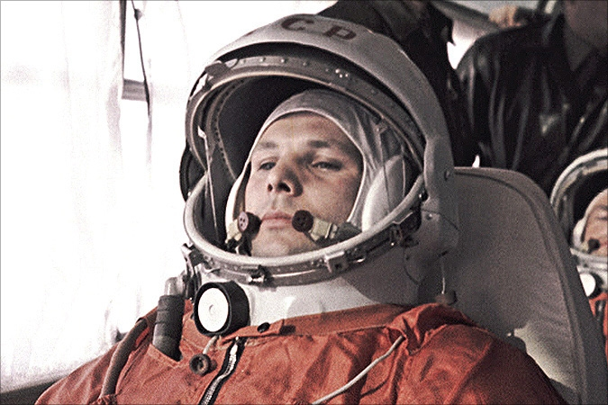
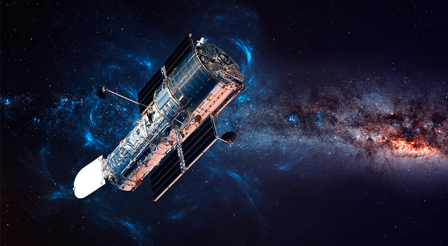
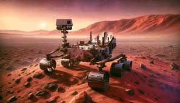

Launched by the Soviet Union on October 4, 1957, Sputnik 1 became the first artificial satellite to successfully orbit Earth. This breakthrough marked the beginning of the Space Age and triggered the Space Race between the United States and the Soviet Union. The satellite, a 58 cm diameter aluminum sphere, orbited Earth for three months while emitting radio signals that could be detected on the ground.

1961
Yuri Gagarin
First human in space
On April 12, 1961, Soviet cosmonaut Yuri Gagarin became the first human to journey into outer space. His spacecraft, Vostok 1, completed one orbit around Earth, marking a historic moment in human spaceflight. The flight lasted 108 minutes from launch to landing, during which Gagarin reached an altitude of 327 km. This achievement demonstrated that humans could survive in space and paved the way for future space exploration.
1969
Apollo 11
First humans on the Moon
On July 20, 1969, NASA's Apollo 11 mission successfully landed humans on the Moon for the first time. Astronauts Neil Armstrong and Buzz Aldrin became the first humans to walk on the lunar surface, while Michael Collins orbited above in the Command Module. Armstrong's first step onto the Moon's surface was accompanied by his famous words: "That's one small step for man, one giant leap for mankind." The mission fulfilled President Kennedy's goal of landing humans on the Moon and returning them safely to Earth.

1990
Hubble Space Telescope
Revolutionary space telescope launched
The Hubble Space Telescope was launched into low Earth orbit in 1990 and remains in operation today. It's one of NASA's largest and most versatile space telescopes, providing unprecedented deep views of the universe. Despite initial problems with its mirror that required a Space Shuttle repair mission, Hubble has made more than 1.5 million observations and generated over 19,000 peer-reviewed scientific papers, revolutionizing almost every area of astronomy.

2012
Curiosity Rover
Mars Science Laboratory lands on Mars
NASA's Curiosity rover landed on Mars on August 6, 2012, using a revolutionary sky-crane maneuver. As part of the Mars Science Laboratory mission, Curiosity's goal is to determine whether Mars ever had the right environmental conditions to support small life forms. The rover has made numerous discoveries, including evidence that ancient Mars had the right chemistry to support living microbes and finding organic molecules in rocks.
Moon Missions
From Apollo to Artemis: Humanity's ongoing exploration of our nearest celestial neighbor.
Discover humanity's fascinating journey into space. See how scientists and astronauts work towards
understanding the mysteries of the universe and developing space technologies.
Future of Space Exploration
Human Mars Landing
Plans for the first human mission to Mars, including habitat design, resource utilization, and sustainable living solutions.